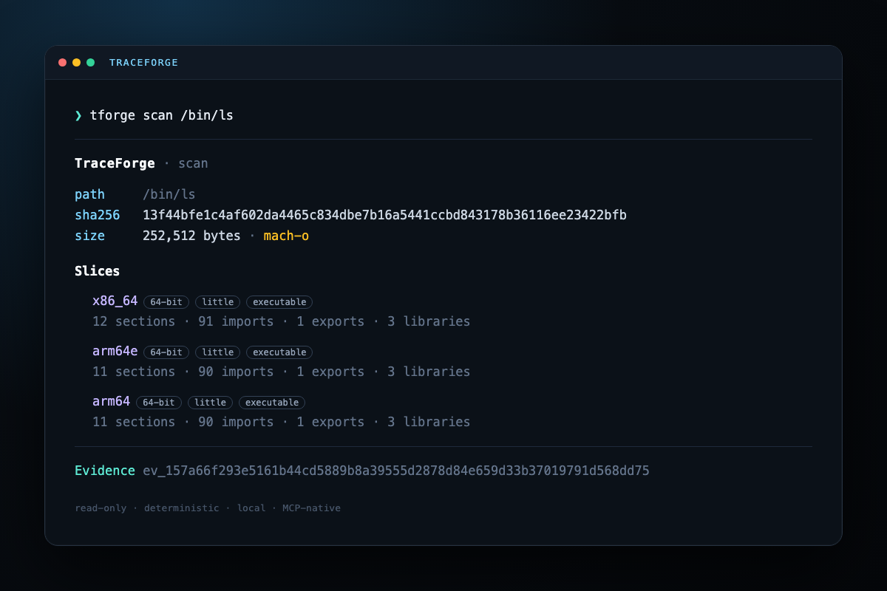

01
Read-only by design
TraceForge never launches, attaches to, or modifies the target. Every read is bounded before allocation.
A read-only binary inspector for Mach-O, ELF, PE and WebAssembly. Deterministic records, a local authenticated store, and an MCP server your agents can trust.

No execution. No telemetry. No mystery state. Just bounded parsing and records you can verify.
TraceForge never launches, attaches to, or modifies the target. Every read is bounded before allocation.
Each result gets a content-addressed ID, input SHA-256, limitations and a local JSON record.
A dependency-free MCP stdio server exposes the same core as the CLI. Five tools, one Evidence contract.
Inspect every slice or select one architecture with --arch arm64.
Compare sections, imports, exports and slice metadata without host-specific noise.
The runtime uses Node built-ins only. The MCP protocol is implemented directly.
Node 22 or newer. No accounts, no API keys, no background daemon.
Need a portable record? evidence export writes a deterministic bundle; evidence import authenticates every record before merging.
One stdio server. Five tools. No SDK or cloud relay in the middle.
scan_binary — format, hashes and slice summary.inspect_binary — sections, symbols, libraries; optional architecture.compare_binaries — deterministic structural changes.get_evidence / list_evidence — authenticated local records.The server speaks newline-delimited JSON-RPC 2.0 over stdio and never writes non-protocol data to stdout.